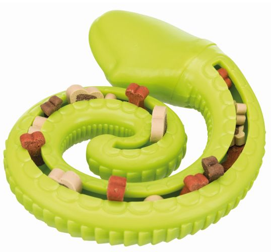

ГЛАВНАЯ
Добро пожаловать в магазин зоотоваров!
Наш зоомагазин открылся 13 ноября 2007 года. Мы рады предложить Вам широкий ассортимент кормов для кошек, собак, птиц, грызунов и большой выбор аксессуаров для Ваших любимцев. А так же подбор ассортимента зоотоваров в удобное для Вас время и место!
Мы с радостью принимаем и обслуживаем ежедневно с 10 до 20 по телефону и в рабочее время в магазине.
Наш магазин зоотоваров работает в Рязани. Работаем за наличный и безналичный рассчет.
СОБАКИ
Корм
Сегодня каждый из видов кормов для собак – сухих, полувлажных, влажных, консервированных – имеет свою классификацию. Ее нельзя назвать унифицированной, единой для всех ведущих компаний-производителей готового собачьего питания, но условно она подразделяется на следующие составляющие: корма эконом-класса, премиум-класса, супер-премиум-класса и холистик. Каждый из них характеризуется достаточно конкретизированными параметрами:
- категорией мясных продуктов;
- источниками и качеством протеина – специального концентрированного белка;
- витаминной палитрой;
- количеством и ассортиментом минеральных веществ, их соотношением;
- наличием ароматизаторов, пищевых красителей, консервантов;
- присутствием добавок, положительно влияющих на работу отдельных органов собаки;
- стоимостью.
Лежанки
Мы с радостью выбираем удобные лежанки, подушечки и домики для декоративных собак, так как не можем представить, чтобы крохотный питомец спал в коридоре на коврике. Но как же быть с представителями средних и крупных пород? Всем ли собакам нужны лежанки или только декоративным? Быть может, большим собакам будет комфортнее на полу?
И сразу начнем с разрушения главного стереотипа. Многие аскетичные владельцы собак считают, что лежанки – это излишество, придуманное для декоративных питомцев, тогда остальные собаки вполне комфортно чувствуют себя в суровых условиях, т.е. лежа прямо на голом полу. Однако лежанки для собак, в первую очередь, разработаны не для удобства питомцев (как многие считают), а для поддержания их здоровья, укрепления иммунитета и профилактики заболеваний.
В будущем тот же самый аскетичный хозяин начнет недоумевать, откуда у его сильного четвероногого друга появился артроз и почему на его локтях образовались большие мозоли. А ведь это прямое следствие неправильных условий содержания.
Да, собака может несколько лет спать на тоненьком коврике в коридоре или и вовсе на холодном полу, и вы не заметите никакой беды, пока у нее не начнутся проблемы с суставами или не разовьется цистит. Как известно, болезнь легче предотвратить, чем лечить. Будет очень обидно, если по недосмотру хозяев здоровье питомца существенно подорвется. Качественное лечение требует серьезных материальных затрат. Организовывая место отдыха собаки и формируя условия содержания и ухода за ней в целом, лишний раз задумайтесь, какими последствиями может обернуться ваше желание сэкономить.
Особенно актуален вопрос об обустройстве места для собаки в осенние месяцы, когда в доме еще не включили отопление, а сквозняки - частые гости. За осенью придет зима, и в холодные месяцы собаке понадобится крепкий иммунитет, чтобы противостоять простудным и другим заболеваниям. Уличные собаки и дикие предки собак в природе, конечно, прекрасно обходятся без лежанок, но не забывайте, что они привыкли к суровым условиям обитания с детства. Кроме того, продолжительность их жизни существенно меньше, чем у домашних питомцев. Квартирные условия содержания накладывают свой отпечаток на организм. А неблагоприятная экология больших городов негативно сказывается не только на нас, но и на наших четвероногих друзьях. Вот почему в вопросах домашнего содержания важно учитывать потребности именно домашней собаки, а не отождествлять ее с дикими сородичами.
- Итак, лежанки необходимы всем, даже самым крупным собакам, так как они:
- защищают собаку от сквозняков и, следовательно, простудных заболеваний;
- предупреждают цистит;
- предупреждают заболевания опорно-двигательного аппарата и суставов, наиболее распространенные из которых артрозы;
- предупреждают образование локтевых мозолей, которые неизбежно появятся у собаки, спящей на голом полу или тонком коврике;
- лежанка – это покой, комфорт и качественный отдых вашей собаки, который она, без сомнения, заслуживает.
ИГРУШКИ
Жевательные
Эти игрушки подойдут собакам любых пород и размеров. Они полезны для очистки зубов, правильного формирования челюстей и просто интересны четвероногим, которые, как известно, любят что-либо погрызть.
Мягкие
Плюшевые и тканевые игрушки собаки обожают не меньше, чем люди. Они с удовольствием засыпают в обнимку с ними, возможно, чувствуя себя так же уютно, как в стае с соплеменниками. Многие мягкие игрушки имеют пищалки, что еще больше привлекает к ним и маленьких щенков, и собак.
С перетяжками

Различные канатики и веревочки подойдут представителям служебных пород. Играя в перетяжки с щенком, можно развить навыки хватки, активно задействовать игровую и добычную мотивацию, дать выход энергии собаки.
Выбирая канатики, следует обратить внимание на их размер. Например, для декоративных пород хороши мини-гантельки и колечки 9-15 см от Beeztees, а для крупных служебных собак лучше взять что-то более объемное (веревки-шуршалки 54 см Rogz Scrubz).
С лакомством
Игрушки с лакомством незаменимы, когда в процессе игры важно добиться от животного желаемого поведения. Наилучший способ – метод поощрения. Щенок чует аппетитный аромат, заинтересовывается, а когда от него добиваются выполнения команды – тут же поощряется.
КОШКИ
Корм
1.Эконом класс:
Состав: субпродукты, злаковые, целлюлоза, растительный белок.
Назначение: предназначен для здорового животного, не страдающего болезнями сердечно-сосудистой и мочеполовой систем.
Преимущества: низкая стоимость и доступность. Продается в зоомагазинах.
Недостатки: корм эконом класса не несет питомцу никакого вреда, но имеет низкую усвояемость продукта. Животным с заболеваниями не подходит. Также не удовлетворяет возрастные особенности питомца
Бренды: Kitekat, UnoCat, Мнямс, Whiskas.

2.Премиум класс:
Состав: натуральное мясо (чаще куриное) и субпродукты, возможно добавление злаков и растительных белков.
Назначение: предназначены для здоровых животных, но изготавливают отдельные корма для профилактики некоторых заболеваний.
Преимущества: в составе многих кормов есть витамины в необходимом количестве. Поэтому не нужно
дополнительно приобретать пищевые добавки для кошки. Хорошая усвояемость. Доступность в зоомагазинах.
Недостатки: Не удовлетворяют все физиологические особенности питомца.
ренды: Cat Chow, Wellkiss, Animonda, Friskies, GimCat, Gourmet, Murmix, Sheba, Dr. Clauder's.

3.Холистик или супер-премиум класс:
Состав: натуральное мясо, отборные овощи и крупы. Не допускается наличие субпродуктов, красителей и консервантов. Разработкой кормов занимаются сертифицированные диетологи и ветеринарные врачи. Имеет в своем составе отборные источники белка, витамины и минералы в легкодоступной организму форме (хелатной), низкое содержание или отсутствие злаковых.
Назначение: корма предназначены для кошек разных пород и возрастов. Существуют линейки для стерилизованных и беременных животных. Корм можно давать своему четвероногому другу постоянно.
Преимущества: корм обеспечивает сбалансированное питание. Кроме того, он легко усваивается. Кошка получает все необходимые ей витамины и минералы.
Недостатки: высокая цена соотносится с отличным качеством кормов. Корм можно купить только в зоомагазине.
Бренды: Mealfeel, Hill’s, Pro Plan, Royal Canin, Bozita, Brit, Leonardo, Schesir, Monge, Pronature,s Arden Grange, Grandin, Trainer, Carnilove, Acana, Orijen, NOW Natural Holistic, Berkley, Eukanuba, Ownat.

4. Диетические корма:
Состав: ингредиенты в составе корма подбираются с учетом того заболевания, для которого он предназначен.
Назначение: для животных, страдающих различными заболеваниями. Поэтому приобретать диетическое питание можно только после рекомендации ветеринара. Иначе употребление такого корма здоровым животным может привести к негативным последствиям.
Преимущества: готовые рационы, которые снижают нагрузку на больной орган и повышают эффективность всего лечения.
Недостатки: можно давать питомцу только после назначения врача. Имеет высокую стоимость. Продается только в ветеринарных клиниках и зоомагазинах с ветаптекой.
Виды: для питомцев с аллергией, сахарным диабетом, избыточным весом, заболеваниями печени и почек, ЖКТ, МКБ, сердечно-сосудистой системы и многих других недугов.
Бренды: Royal Canin, Hill's, Bozita, Purina, Trainer.

ЛЕЖАНКИ
Кошки – знаменитые сони и лежебоки. Большую половину своего времени, они предпочитают проводить спящими или вальяжно лежащими в самых неожиданных местах. По средним подсчетам, кошка проводит во сне 15 часов в сутки, то есть вдвое больше, чем человек. Поэтому мягкая лежанка или уютный домик – не роскошь, а средство первой необходимости! Если у кошки нет своего спального места – она абсолютно точно займет Ваше! Если Вам не нравится, что в вашей постели куча шерсти от любимого кота и Вы задумались об отдельном спальном месте своего питомца – то эта статья для Вас! Если в доме несколько кошек, лежанки должны быть у каждой из них.
ИГРУШКИ
Озорная, любопытная и ласковая кошка – источник пушистой радости для всех членов семьи! Однако порой котовладельцев расстраивают проделки питомцев, которые не реагируют на запреты и с упорным постоянством продолжают точить когти об обои, мебель, лазать по шторам, ковырять землю в цветочных горшках.
Психологи доказали: такое поведение не связано с плохим воспитанием или вредностью кошки. Все дело в банальной скуке и отсутствии должного внимания к ее потребностям. В этом случае хозяев выручат специальные игрушки, которые обеспечат коту необходимый досуг и отвлекут от баловства.

ТУАЛЕТЫ
Поскольку туалет – важная часть жизни домашней кошки, на лотки всегда есть спрос, а профильные магазины всеми силами стремятся этот спрос удовлетворить. В итоге неподготовленный хозяин, решив купить новый лоточек для питомца, может простой прийти в замешательство. Чтобы этого не произошло, рассказываем о том, какие виды кошачьих туалетов можно встретить в продаже, чем они различаются, и выбираем лучший.

РЫБКИ И РЕПТИЛИИ
КОРМ
Разнообразие кормов для рыб на современном рынке зоотоваров – это не маркетинговый ход, как может показаться начинающему аквариумисту, а буквально вынужденная необходимость. Прежде всего, оно продиктовано разницей в питании различных разновидностей рыбок, заложенной природой. Соответственно, выпуск корма разных форм и составов и их использование дома – это попытка создать максимально комфортные, соответствующие естественной среде обитания, условия

ДЕКОР
Какие материалы можно использовать?
Прежде чем приступить к оформлению аквариума, необходимо выбрать направление, концепцию, в которой будет вестись работа. Далее следует произвести разработку дизайна, и в соответствии с ним подобрать материалы. Главное, не забывать, что в приоритете — условия обитания аквариумных жителей, а дизайн всегда вторичен и организуется с учётом их требований.- К основным материалам, используемым для декора аквариумов, относят:
- металлы;
- стекло;
- коряги и прочую органику;
- керамику;
- минералы и горные породы;
- пластик, резину, пенопласт.
При выборе материала важно учитывать, как он взаимодействует с водной средой. Если его присутствие наносит вред биологическому балансу, нужно убрать проблемный материал из аквариума.

ГРЫЗУНЫ
КОРМ
Для грызунов
Пища – это не только залог активности, но и здоровья и правильного развития. Причем это утверждение абсолютно справедливо для любого живого организма – от человека до маленькой мышки. Собственно, о последних, а также о кроликах, хомячках, морских свинках и других домашних грызунах и обо всем разнообразии корма для них мы и расскажем сегодня.

ВАКАНСИИ
Мы рады пригласить на работу активных, молодых продавцов, ветеринаров с профильным образованием и опытных управляющих. Сегодня в нашей команде более 1 000 специалистов, объединенных общей идеей.
Заолните анкету ниже с указанием желаемой должности и города проживания в теме письма. Мы свяждемся с вами, если будет свободна соответствующая вакансия
КОНТАКТЫ
Работаем еждневно с 10:00 до 19:30
Адрес: 390011,Рязань, Телевизионная 11, этаж 1 (рядом с входом Пяторочка)
Телефон: 8(910)-900-33-58

Бонусная система
С картой лояльности вы можете приобретать товары с персональной скидкой или оплачивать покупки бонусами, получать приглашения на закрытые распродажи, открытия новых бутиков, сезонные показы и презентации, участвовать в торжественных встречах с итальянскими дизайнерами обуви и аксессуаров. Для каждого владельца карты лояльности предусмотрен ряд дополнительных эксклюзивных привилегий.
| Наименование карты | Сумма покупки от | Скидка |
|---|---|---|
| Рубиновая карта | 20000 тыс. руб. | 2% |
| Сапфировая карта | 50000 тыс. руб. | 5% |
| Аметистовая карта | 80000 тыс. руб. | 8% |
| Бриллиантовая карта | 100000 тыс. руб. | 10% |